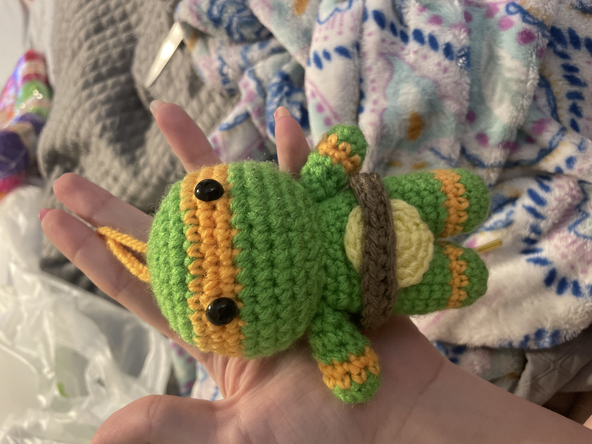
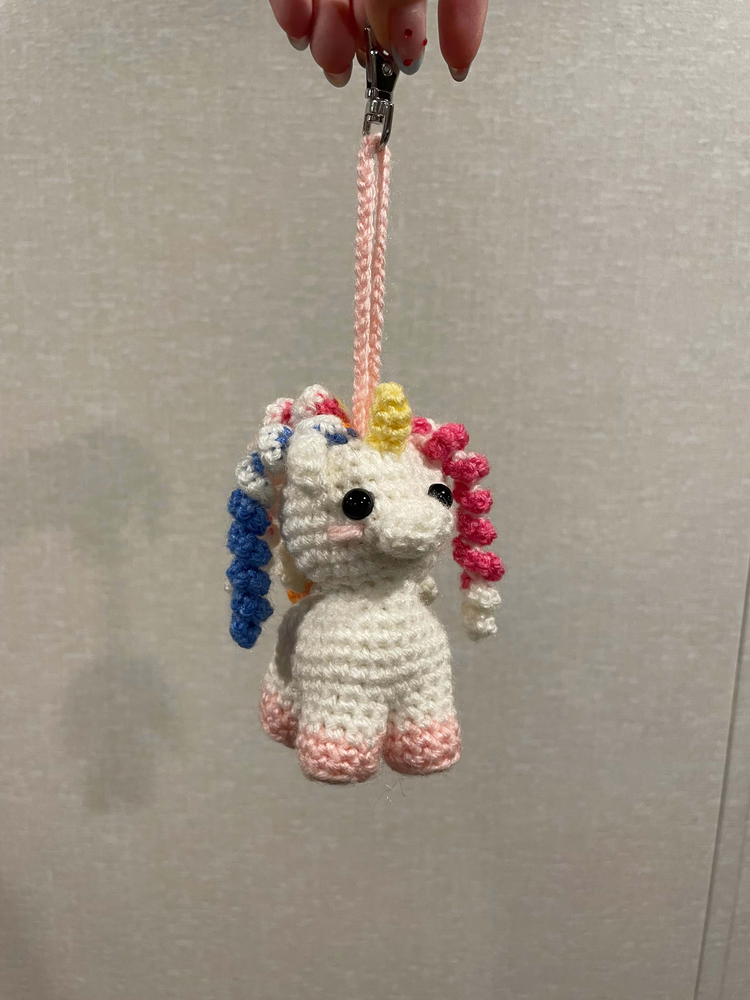
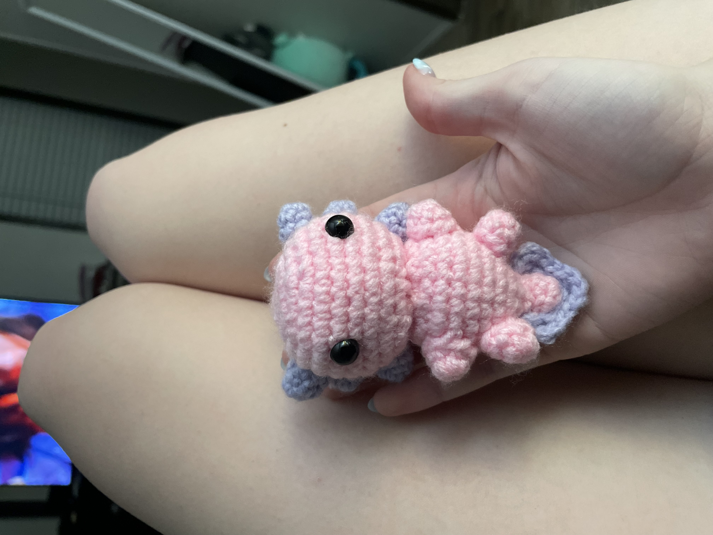
Keychains made to be about 3-4 inches tall. Can be made with a metal clip attachment or with a plain cord. Please list in the requests box which type you would like.
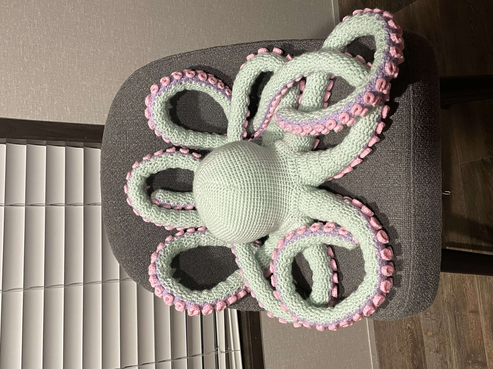
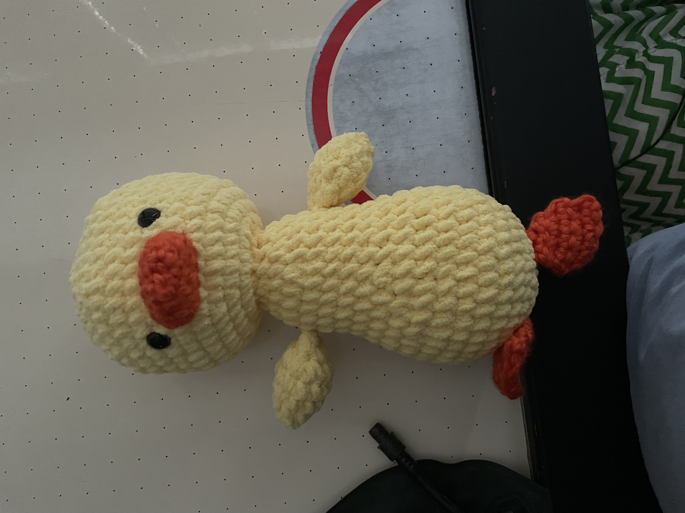
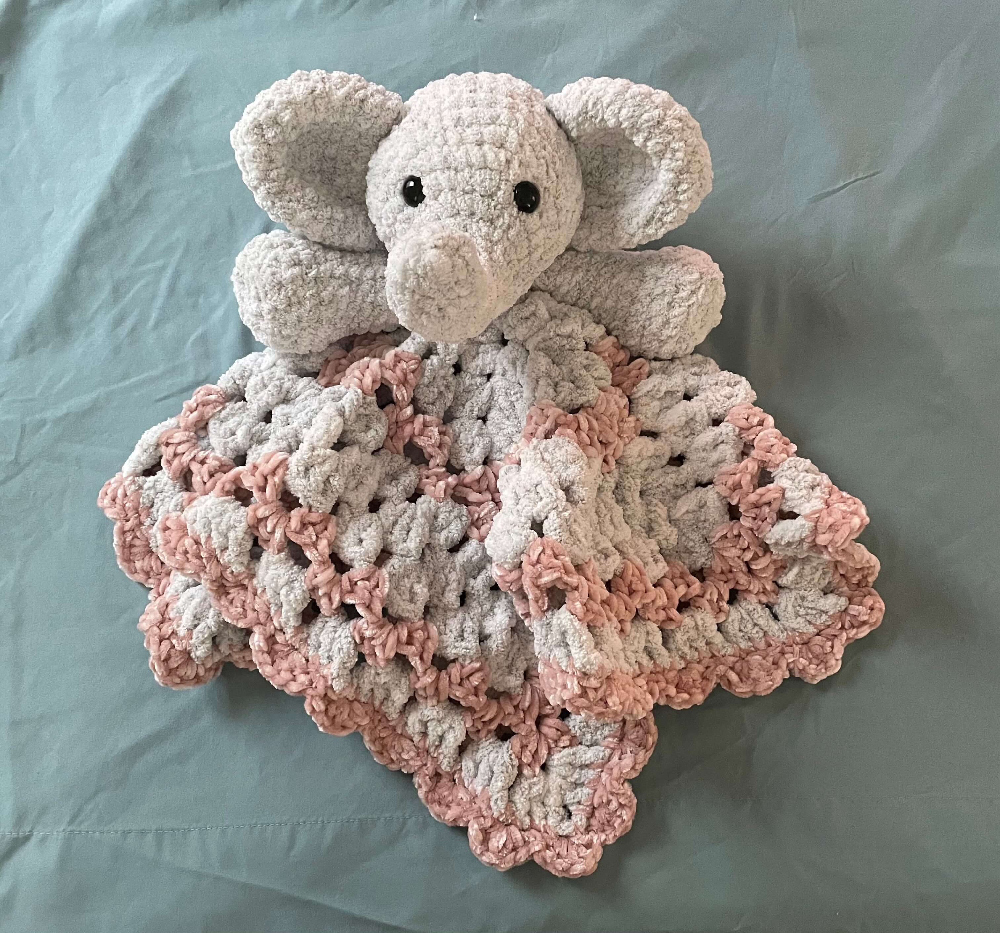
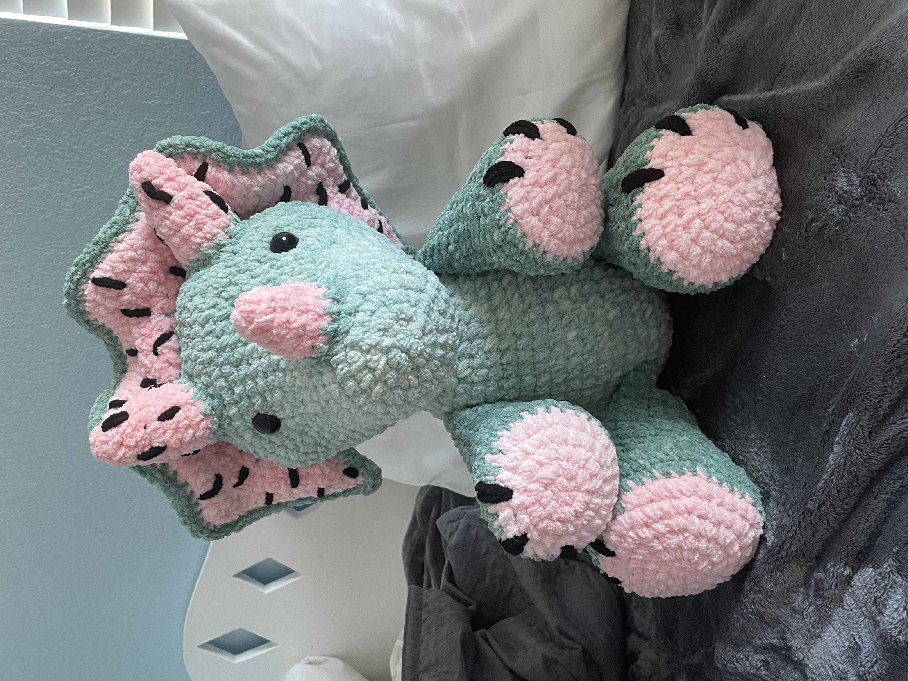
Stuffed friends can be made to about any size. You may request for the stuffed animal to be made as a lovey. A lovey will be the head and two arms of whatever animal you choose. If you have any other animal requests feel free to list it in the requests box and I will reach out to you if there are any concerns.
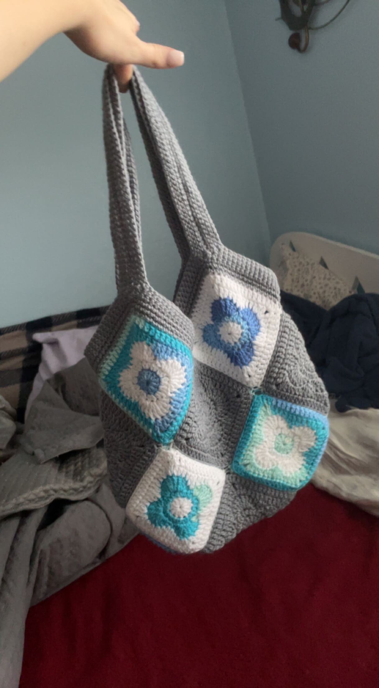
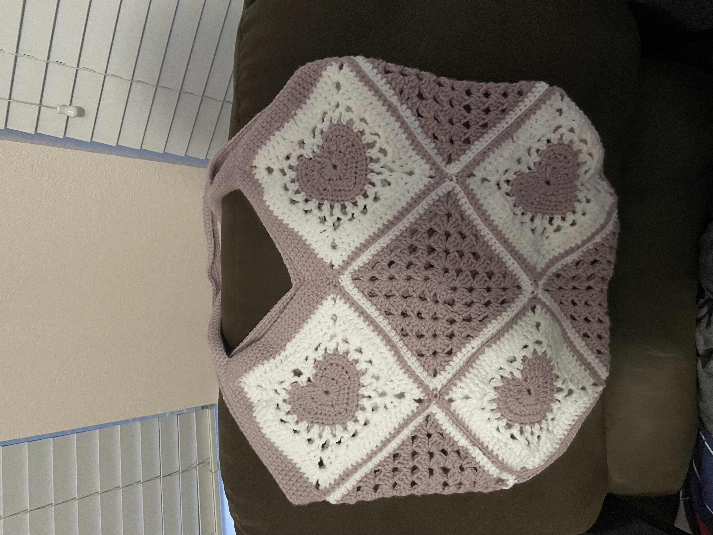
Bags are also size customizable but will always be made in this shape and will include a lining. If you have any specific requests please let me know.
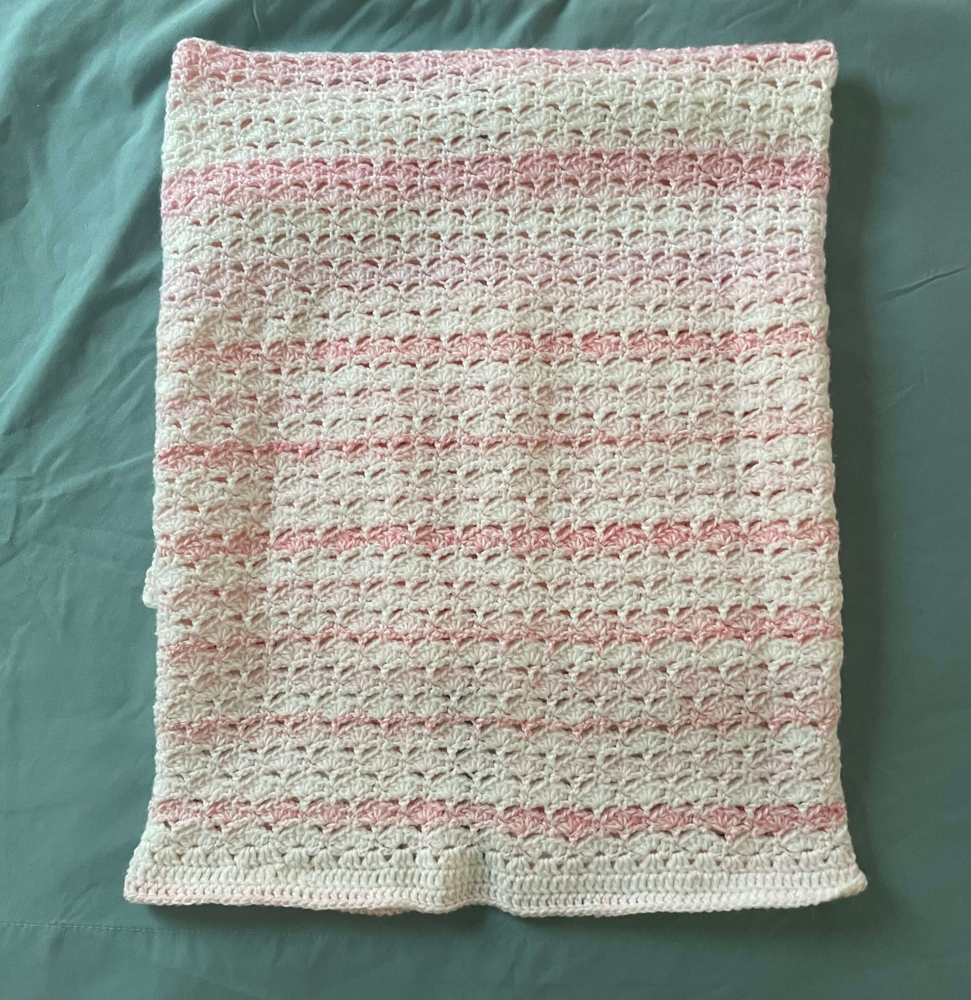
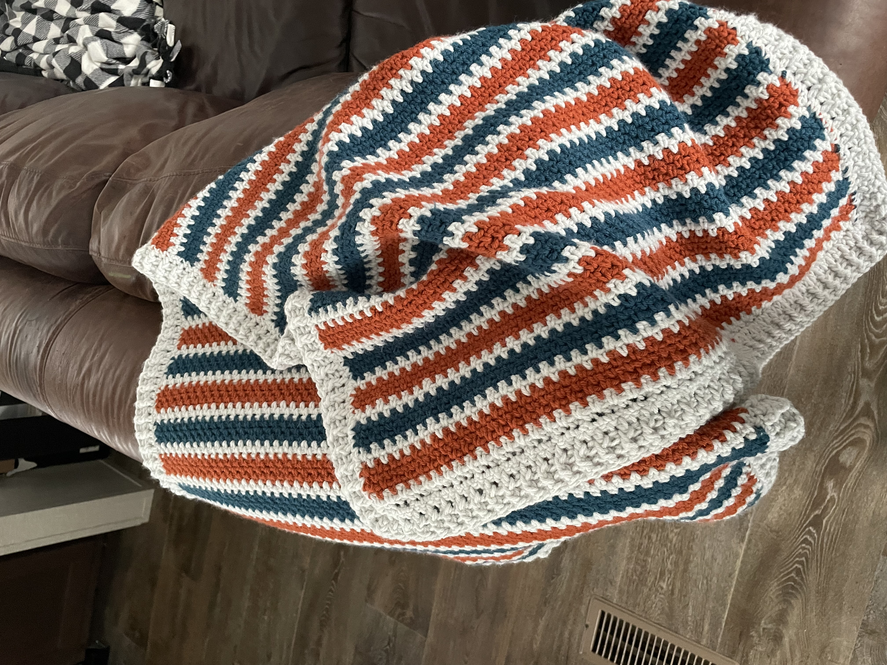
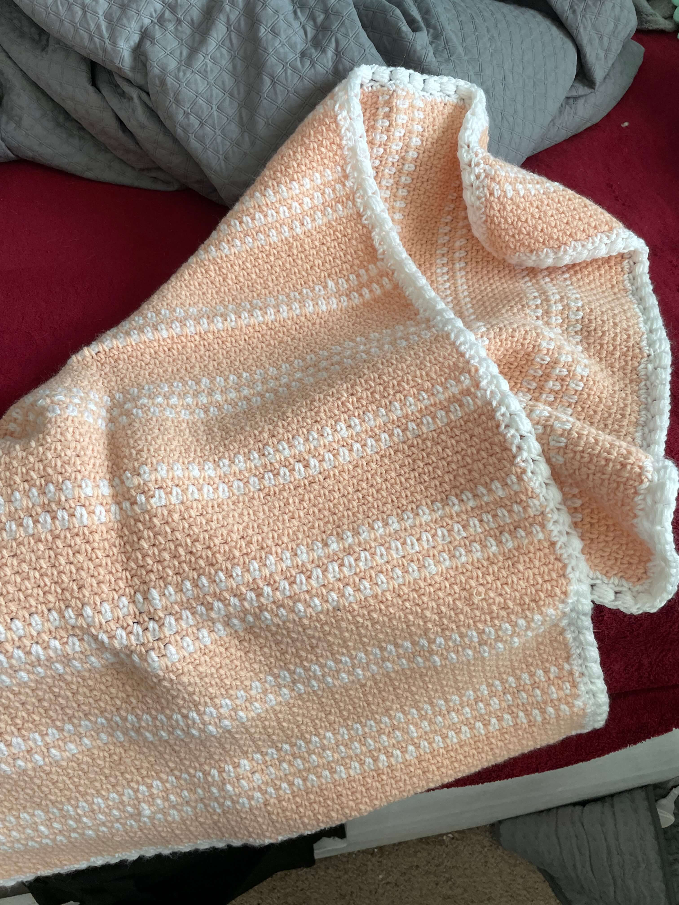
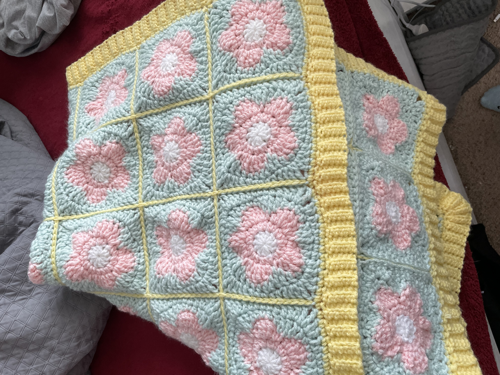
Blankets will take the longest time to fulfill because of size. Please specify if you want a small square sized blanket, a small rectangle, or a medium rectangle in the requests box. These are designed to be baby blankets. They will not be size appropriate for an adult.